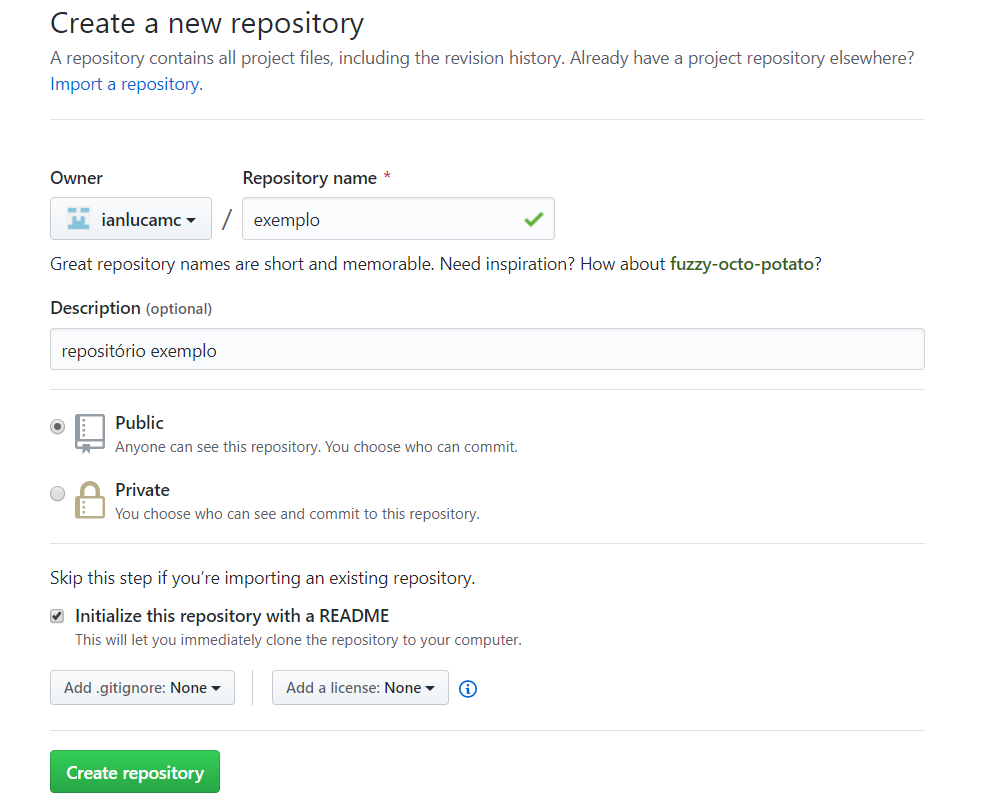
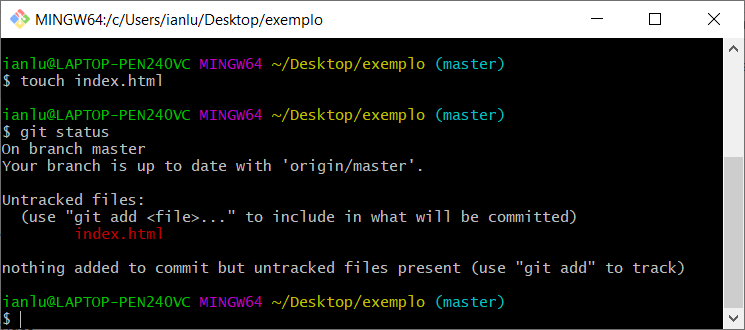
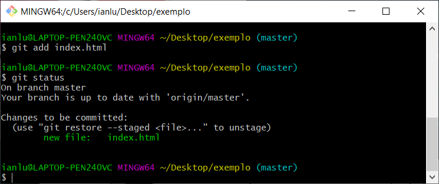
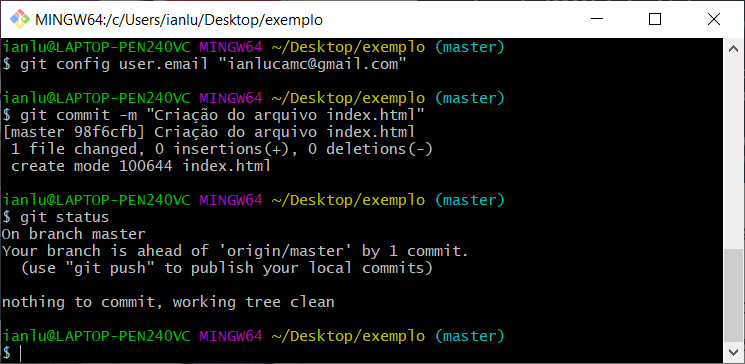
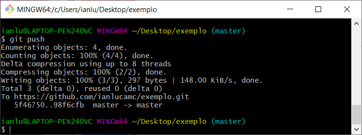
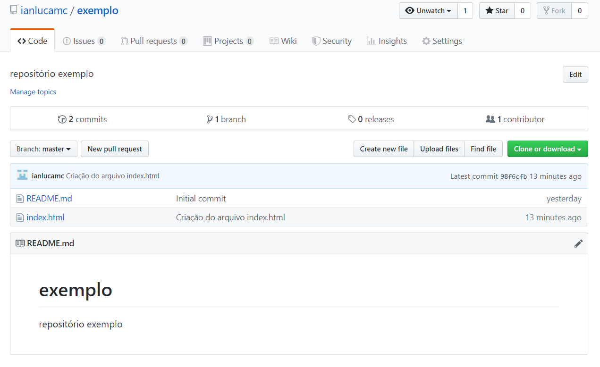

Tutorial Git + GitHub
O Git é um sistema de controle de versão de arquivos. Uma das aplicações desse recurso é o desenvolvimento simultâneo de projetos, na qual diversos colaboradores podem editar e/ou criar arquivos e permitir que suas alterações possam ser feitas sem sobrescrever conteúdos.
GitHub, por sua vez, é uma plataforma de hospedagem de código-fonte que permite que usuários cadastrados na plataforma contribuam em projetos privados e/ou Open Source de qualquer lugar do mundo, ultilizando o Git para realizar o controle de versão por meio das funcionalidades extras aplicadas. Este passo a passo, portanto, tem o intuito de te ajudar a começar colocar em prática o uso dessas ferramentas.
1. Download Git
Faça o download do git, de acordo com seu sistema operacional, clicando aqui.
2. Criando conta e repositório no GitHub
Para ultilizar o GitHub não é necessário fazer download, mas é preciso ter uma conta no serviço, e caso ainda não tenha uma, acesse github.com para criá-la. Após a criação, clique no botão 'New Repository' em verde para ser redirecionado a uma tela, como na imagem a seguir.
No exemplo, estamos criando um repositório de nome exemplo, de domínio público, e com o arquivo
README.md embutido, que conterá a descrição do projeto.
Agora que o repositório já está criado, ele estará diponível no endereço
https://github.com/username/nomedorepositório, em que username é o login definido por você no cadastro,
e nomedorepositório, definido na criação do mesmo. Ao acessar o url, tem-se a tela principal do seu projeto,
conforme a imagem abaixo.
Há muitas informações nessa tela, mas por enquanto vamos nos atentar ao botão 'Clone or download' em verde. Esta URL gerada será usada para que possamos clonar o projeto na máquina desejada, e ao clicar no botão ao lado do endereço, já teremos a URL na área de transferência.
3. Clonando o projeto
Para abrir um terminal Git no Windows, basta clicar com o botão direito do mouse em um local de sua preferência
e escolher Git Bash Here. Em sistemas Mac/Linux, use o terminal/console, o git já estará disponível por lá.
No terminal, utilize o comando git clone + urldorepositório e tecle enter para clonar seu projeto, como no exemplo:
perceba que, ao fazer o git clone, é baixado em uma pasta com o nome e conteúdos do projeto.
Comandos Git
Com o repositório na sua máquina, vamos para os comandos iniciais:
Crie algum arquivo teste na pasta do projeto para entendermos na prática os processos, e após isso, abra o terminal git na pasta e
execute o comando git status. A resposta será semelhante a essa:

Dentre as várias informações retornadas, o Untracked files indica que há alterações que não foram registradas no git.
Para preparar este arquivo para o versionamento, usamos o comando git add, como a seguir:

Agora que o arquivo criado já está no INDEX do repositório, o mesmo está pronto para o commit. Para commitar, configure o usuário que
registrará as alterações, com o comando git config user.email "SEU ENDEREÇO DE EMAIL", e logo após, registre a nova versão
por meio do git commit -m "MENSAGEM EXPLICANDO MUDANÇAS", desta forma:

Pronto, o arquivo já está no repositório local, isso é indicado pelo retorno do git status afirmando que já não há nada de
novo no projeto. Porém, essa mudança ainda não foi realizada no GitHub, isso por que as mudanças foram locais, e para publicá-las, usa-se
o comando git push, como no exemplo:

Agora podemos ver as mudanças realizadas no projeto disponíveis no site GitHub:

"E tá pronto o sorvetinho".
Resumo:
- Para ver o status do projeto:
git status - Para adicionar as mudanças feitas na nova versão:
git add * - Para configurar o usuário que fará/registrará as alterações:
git config user.email "SEU ENDEREÇO DE EMAIL" - Para registrar as mudanças (nova versão):
git commit -m "MENSAGEM EXPLICANDO MUDANÇAS" - Para sincronizar com repositório remoto:
git push origin master